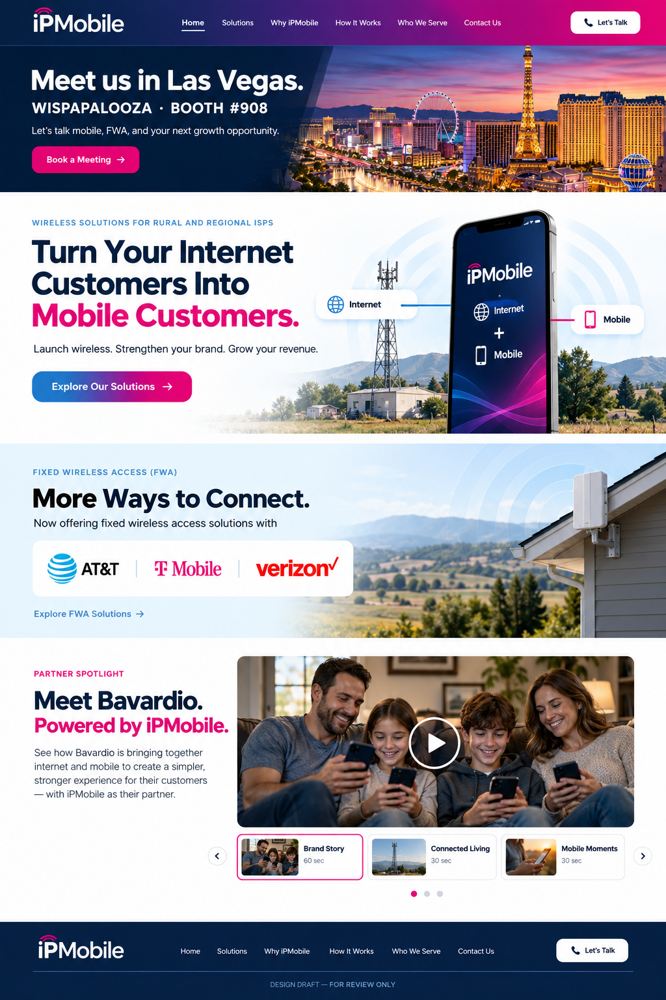

A new look for what’s next.
Review the proposed WISPAPALOOZA promotion, FWA carrier section, and Bavardio partnership showcase. This is a visual concept; the current ipmobile.ai website remains unchanged.

Preview the actual videos.
Select a clip below. When a video finishes, the next clip is selected. Playback is controlled by the viewer.
What we’re reviewing
- Event banner placement and Booth #908 messaging.
- FWA announcement featuring AT&T, T-Mobile and Verizon.
- Bavardio partnership placement and the three-video rotation.
Images, carrier marks, and wording in the concept are illustrative and subject to final approval. Video labels are draft labels. This review page does not replace the existing website.
Share feedback on GitHub ↗